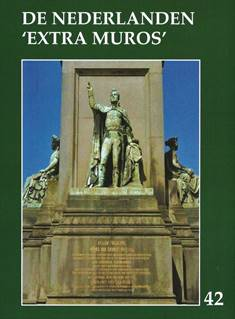

> publicaties >
jaarboek 42 (2020)
Ook dit 42e Jaarboek De Nederlanden ‘extra
muros’ brengt weer een breed palet aan bijdragen over de
randgebieden van onze Lage Landen die deel uitmaken van ons
geschiedkundig erfgoed. En als steeds openen we ook deze editie
met de korte bijdrage die zowat in een notendop het “programma”
van Zannekin
verwoordt.
Dick Wortel komt als eerste aan het
woord met De Nederlandse taal in Frans-Vlaanderen. Het
betreft de uitgeschreven versie van zijn lezing op de
Ontmoetingsdag van Zannekin te Leiden in het najaar van 2019.
In het najaar van 1964 werd Jean-Marie
Gantois’ 60e verjaardag feestelijk gevierd op het
grafelijk Slot van Male nabij Brugge. Bij die gelegenheid sprak
de gevierde zijn beklijvende rede Bezinning bij een
verjaardag uit. Na zoveel jaren past het ons daarover
andermaal te bezinnen, temeer daar die feestviering de
onmiddellijke aanleiding was tot de (her)oprichting van de
huidige Vereniging/Stichting Zannekin. Als bijlage daarbij een
overzicht van de bijdragen gewijd aan J.M. Gantois in onze
jaarboekenreeks.
Johan Hellinx verrast ons met Een
Belgisch-Nederlandse kijk op het Brussel van Charlotte Bronté.
De zussen Emily en Charlotte arriveerden anno 1842 in het
toen nog grotendeels Nederlandstalige Brussel. Verder wordt
stilgestaan bij het op die tijd en de Bronté’s terugblikkende
werk van Jolien Janzing en Nathalie Stalmans.
In Een wandeling door Den Haag
neemt Jan van Tongeren ons mee op een leerrijke
geschiedenisles doorheen de residentiestad, waarbij aan tal van
aspecten in het straatbeeld stilgestaan wordt. Een herinnering
aan onze Ontmoetingsdag van enkele jaren terug, maar evenzeer
een handzame handreiking voor wie op z’n eentje op verkenning
wil gaan.
Wim van Heugten nam een
onafgewerkte studie van z’n overleden broer Wiro weer ter hand
waarin de focus uitgaat naar leven en werk van De Maaslandse
heilige Sint-Hubertus. Daarbij wordt ook veel aandacht
besteed aan de talrijke pelgrimswegen en bedevaartsoorden in
deze.
Johan Hellinx is in dit jaarboek andermaal
present met een eerste luik over De strijd van de Geuzen in
de ontluikende Belgische literatuur. Daarin wordt vooral
stilgestaan bij de geuzenromans van de West-Vlaming Henri Moke,
die al in 1827 debuteerde als romancier en rekenen kon, op de
steun van koning Willem I. Drie jaar later kwam er een bruusk
einde aan de Verenigde Nederlanden en diende de nieuwe staat op
zoek naar een legitimatie voor zijn bestaan. Moke wist aan die
gewijzigde context een mouw te passen.
In De Lage Landen, gisteren en morgen
blikt Maurits Cailliau terug en vooruit op de
geschiedenis van onze Lage Landen. Hij betreurt daarbij het
verraad van de Vlaamse beweging ten overstaan van haar rol bij
de Heel-Nederlandse bestrevingen, waarbij ze de Belgische
begrenzingen niet weet te overstijgen.
Met de Kroniek en boekbesprekingen
sluiten we traditioneel ons jaarboek af. In de kroniek wordt wat
breder stilgestaan bij de heilige Godelieve en het recente
memobord in haar geboorteplaats Heimfriedswilder nabij Bonen
(Bouloge) en in de boekbesprekingen bij het boekje van Eric
Vanneufville over Jean-Marie Gantois dat veel te wensen
overlaat.
|
omvang
|
208 paginas |
|
ISBN
|
|
|
prijs leden (inclusief verzendingskosten)
|
€ 29,00 |
|
prijs niet-leden (exclusief
verzendingskosten)
|
€ 35,00 |